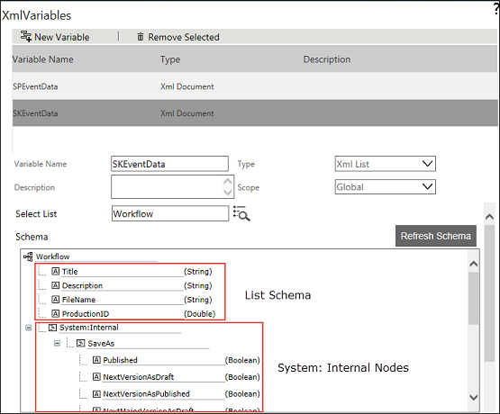

No
The schema of XML list includes schema of the list and system internal nodes.

System Internal Nodes
When you create a list XML variable for the list, system internal nodes are also created automatically for internal use. This will help you to save your list item as a different version as Published or Draft status when you update an item. It will also help you to save the item As Folder and Published.
If you want to add a new listitem with Published status, select Published from the SaveAs option under Sytem: Internal and then set value as True.